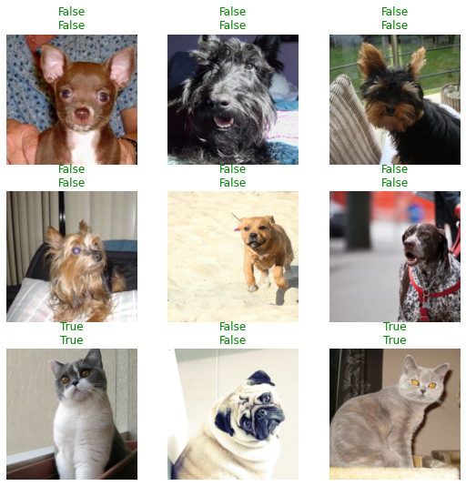

# !pip install fastai
from fastai.vision.all import *Retrieval practice is when you actively try to remember something as a way of making sure that you learn it well. (Read more about it here). Today I did that with the dogs vs cats example that the first two chapters cover.
We start with installing the fastai library and importing everything from the vision library. This was hard to remember since the pattern of .all and importing * is not something I’ve seen much in Python imports.
Then we create the simple function that will be used to classify the images. The pets dataset relies on the first letter of the filename for knowing whether a picture is of a cat or a dog. So the function is pretty simple: it checks whether the first letter is a capital letter or not.
The simple assert testing was a little trick that I saw mentioned somewhere this past week. It’s not a full-fledged test suite, but it’s at least the start of something that can later be refactored out into whatever takes its place, be it using pytest or something else.
# define the function that'll classify the images
def is_cat(string):
return string[0].isupper()
assert is_cat("abs") == False
assert is_cat("Abs") == TrueNow we have to import the data for the files and apply whatever custom transforms we want applied to them.
I had certainly forgotten that untar_data was a method when I started out with this. I also am not familiar enough with the pathlib library as I need to be.
It’s interesting that we actually don’t even need to do any of the batch transformations on the images in order to get excellent results. I imagine that’s because the task is so close to that of the original resnet architecture.
# import the data
path = untar_data(URLs.PETS)/'images'
dls = ImageDataLoaders.from_name_func(path, get_image_files(path), label_func=is_cat, item_tfms=Resize(224))Then it’s all about passing the dataloaders object into the cnn_learner function, along with our desired architecture. We also set the error_rate (i.e. 1 minus the accuracy at making predictions) as the metric we’ll see displayed in the output.
# instantiate a learner
learner = cnn_learner(dls, resnet34, metrics=error_rate)
# fine-tune the model
learner.fine_tune(5)| epoch | train_loss | valid_loss | error_rate | time |
|---|---|---|---|---|
| 0 | 0.140326 | 0.019799 | 0.008119 | 00:19 |
| epoch | train_loss | valid_loss | error_rate | time |
|---|---|---|---|---|
| 0 | 0.046906 | 0.021923 | 0.006089 | 00:24 |
| 1 | 0.041144 | 0.009382 | 0.004060 | 00:25 |
| 2 | 0.028892 | 0.004109 | 0.002030 | 00:25 |
| 3 | 0.008950 | 0.002290 | 0.001353 | 00:25 |
| 4 | 0.004486 | 0.002822 | 0.001353 | 00:25 |
And here you can see the results. In this training run, with 5 epochs, we were able to achieve a 99.9% accuracy. Not bad!
learner.show_results()